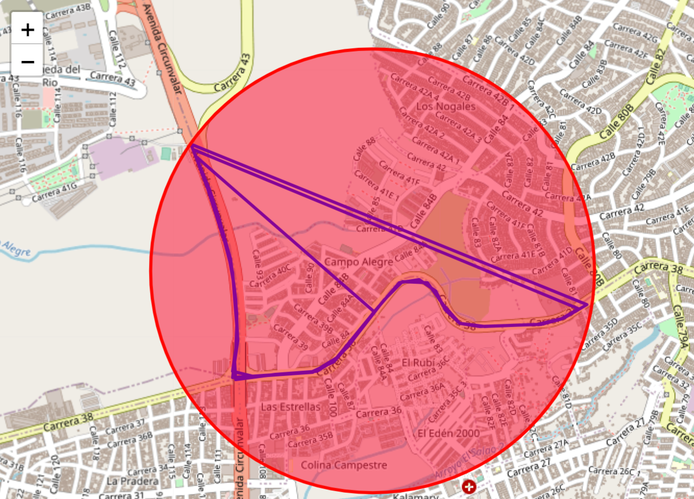

En este apartado se puede consultar el historial de locaciones registradas por la aplicación,
filtrando por fecha y hora.
Posteriormente se mostrará una tabla con los registros obtenidos de la base de datos.
Navegación
Selecciona fecha y hora de registro que deseas consultar.

Si se encuentran datos, se trazará una ruta en el mapa y podrás seleccionar zonas
especificas con el puntero.